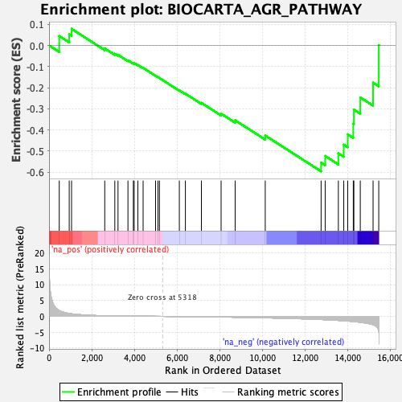
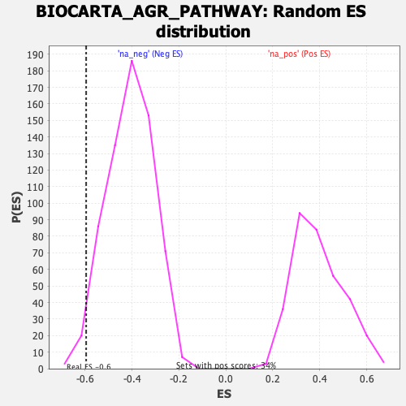

| | | Dataset | DE_genes |
| Phenotype | NoPhenotypeAvailable |
| Upregulated in class | na_neg |
| GeneSet | BIOCARTA_AGR_PATHWAY |
| Enrichment Score (ES) | -0.59571546 |
| Normalized Enrichment Score (NES) | -1.4568462 |
| Nominal p-value | 0.022692889 |
| FDR q-value | 0.24584943 |
| FWER p-Value | 0.996 |
Table: GSEA Results Summary

Fig 1: Enrichment plot: BIOCARTA_AGR_PATHWAY
Profile of the Running ES Score & Positions of GeneSet Members on the Rank Ordered List
| PROBE | GENE SYMBOL | GENE_TITLE | RANK IN GENE LIST | RANK METRIC SCORE | RUNNING ES | CORE ENRICHMENT | | 1 | PAK1 | | | 479 | 1.830 | 0.0445 | No |
| 2 | PAK2 | | | 946 | 0.929 | 0.0526 | No |
| 3 | CDC42 | | | 1055 | 0.795 | 0.0784 | No |
| 4 | AGRN | | | 2611 | 0.188 | -0.0145 | No |
| 5 | SP1 | | | 3083 | 0.133 | -0.0395 | No |
| 6 | EGFR | | | 3233 | 0.120 | -0.0443 | No |
| 7 | CHRNA1 | | | 3699 | 0.087 | -0.0708 | No |
| 8 | ARHGEF6 | | | 3952 | 0.073 | -0.0841 | No |
| 9 | PAK3 | | | 3990 | 0.070 | -0.0836 | No |
| 10 | UTRN | | | 4163 | 0.061 | -0.0922 | No |
| 11 | NRG3 | | | 4410 | 0.047 | -0.1062 | No |
| 12 | NRG1 | | | 4994 | 0.016 | -0.1433 | No |
| 13 | RAC1 | | | 5105 | 0.011 | -0.1500 | No |
| 14 | NRG2 | | | 5176 | 0.008 | -0.1542 | No |
| 15 | LAMA3 | | | 6108 | -0.047 | -0.2126 | No |
| 16 | ACTA1 | | | 6392 | -0.065 | -0.2282 | No |
| 17 | GIT2 | | | 7143 | -0.122 | -0.2718 | No |
| 18 | CHRM1 | | | 8066 | -0.205 | -0.3230 | No |
| 19 | PAK4 | | | 8724 | -0.277 | -0.3542 | No |
| 20 | DMD | | | 10135 | -0.468 | -0.4262 | No |
| 21 | MAPK1 | | | 12754 | -0.998 | -0.5545 | Yes |
| 22 | MAPK3 | | | 12945 | -1.060 | -0.5231 | Yes |
| 23 | ITGB1 | | | 13563 | -1.279 | -0.5103 | Yes |
| 24 | DVL1 | | | 13816 | -1.386 | -0.4695 | Yes |
| 25 | LAMA4 | | | 14001 | -1.471 | -0.4207 | Yes |
| 26 | MAPK8 | | | 14262 | -1.636 | -0.3700 | Yes |
| 27 | DAG1 | | | 14290 | -1.654 | -0.3035 | Yes |
| 28 | LAMA2 | | | 14590 | -1.863 | -0.2460 | Yes |
| 29 | CTTN | | | 15190 | -2.639 | -0.1760 | Yes |
| 30 | JUN | | | 15456 | -4.705 | 0.0010 | Yes |
Table: GSEA details [plain text format]

Fig 2: BIOCARTA_AGR_PATHWAY: Random ES distribution
Gene set null distribution of ES for BIOCARTA_AGR_PATHWAY